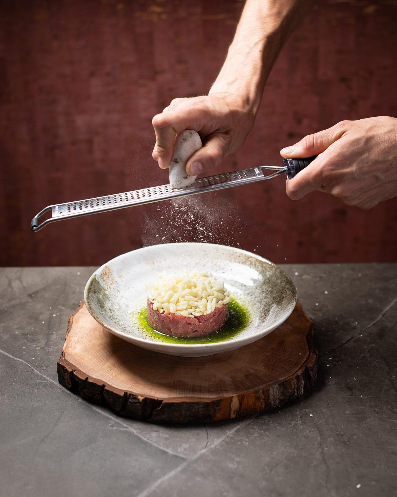
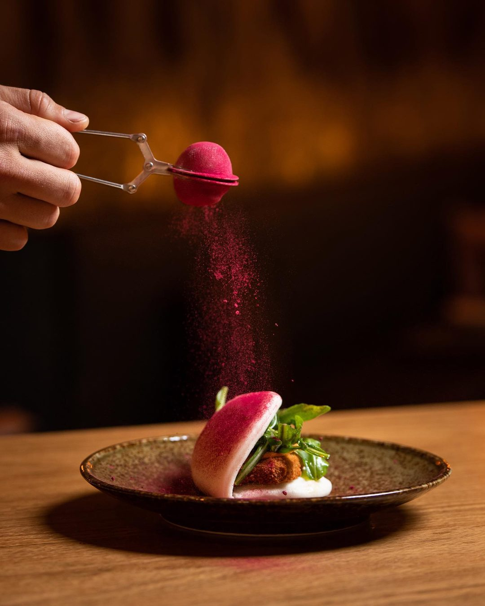
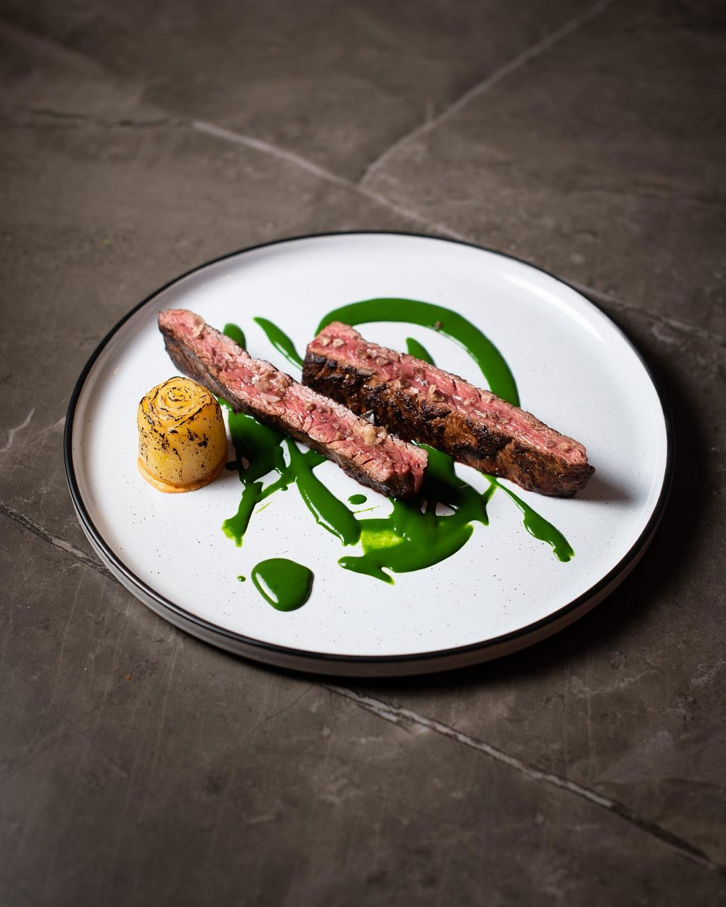
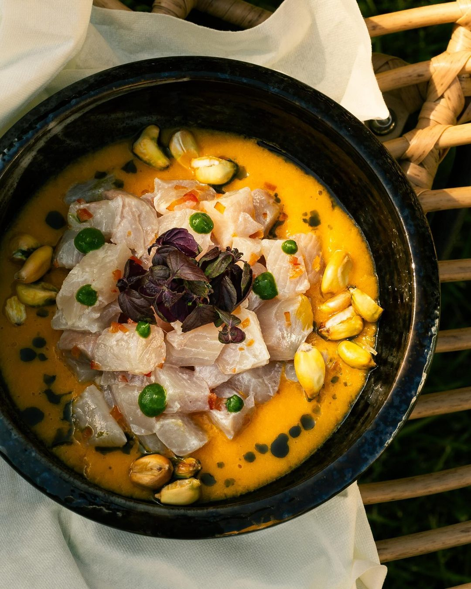
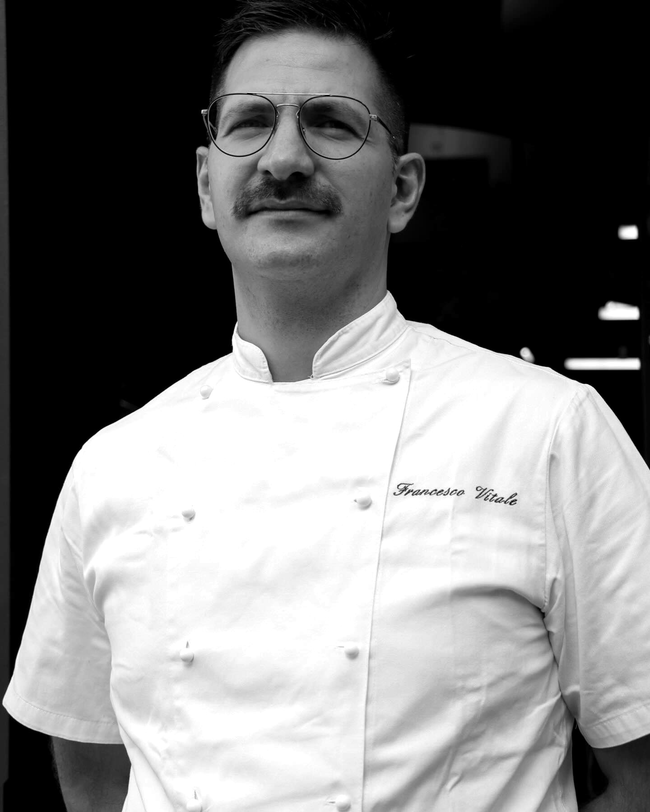

La cucina
Creatività in ogni piatto.
Un viaggio senza confini: culture diverse, combinazioni inattese, una visione riconoscibile. Piatti piccoli da condividere e portate da gustare con calma.
Signature
Cinque piatti per cominciare.
-
Bao alla milanese
AntipastiPanino al vapore · cotoletta di sovracoscia di pollo · rucola · maionese piccante di pomodori
-
Ceviche di ricciola
AntipastiLeche de tigre · sesamo
-
Risotto con crema di zucca
PrimiMandarino · pepe timut · caffè
-
Controfiletto di Black Angus argentino
SecondiChimichurri · scarola ripassata
-
Cremoso alla nocciola
DolciBiscuit al cacao · dulce de leche





Lo chef
Tecnica, ricerca e rispetto per la materia prima.
Pugliese di origine, Francesco Vitale si è formato in alcune delle cucine internazionali più prestigiose, accanto a chef come Heston Blumenthal e Simon Rogan, prima di arrivare a Milano al Mandarin Oriental. Ad Alegre porta una cucina contemporanea che segue le stagioni e rilegge i sapori della tradizione con creatività, senza perdere di vista l'essenza del gusto.
Francesco Vitale Lo chef